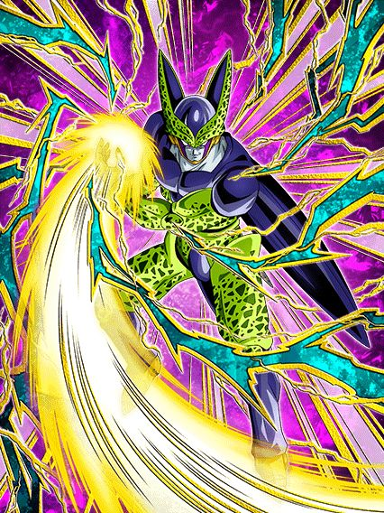

O mês inteiro de Agosto se resume a "Global tentando fazer speedrun de lançar todos os cards q faltam em 1 mês pq eles não souberam administrar a junção das versões corretamente"
Não dá pra negar que é literalmente isso.

Ele fala pelas árvores.. e também pelos saxofones.
Tô falando sério, o Toppo tem uma das melhores intros desse jogo, a OST é impecável, trabalho divinamente perfeito
Enfim, o Toppo é um raro buff de Universe 11 que genuinamente é bem forte, mas que 90% dos jogadores vão skipar pela falta de DS e outros fatores
Se lembra do card do Ginyu LR que lançou faz uns 2 meses? Pois é, AGORA ele tem um time, já que o Toppo é o líder de Special Pose
A intro desse cara dá defesa ativa por 3 turnos e 11% de redução de dano permanente, mas o Toppo é o típico "tank que quer ficar no slot 1", já que lá ele ganha 200% de DEF a mais e fica com defesa ativa permanente, além de ele ter 20% de redução de dano natural
Em geral, na forma base ele é bem mais focado em ser um tank suporte, apesar de ter um dano decente
Ele muda orbs INT pra rainbow se estiver acima de 50% de HP, e dá 30% de ATK e DEF pra Special Pose e Defenders of Justice
Em geral, super simplão, mas bem confiável pra tankar e dar dano, mas a real doideira começa quando vc transformar esse cara
Condição bem decente, a partir do turno 4 se tiver outro Special Pose ou Defenders of Justice no turno, ou a partir do turno 6
Liberem o Lorax.
")
Se você não gosta de desvio, melhor se retirar e ir ler outra review..
O Toppo mantém várias das suas qualidades transformado, tendo defesa ativa permanente pra sempre, continua mudando orbs INT pra rainbow, e ainda tem um bom papel de tank.. mas com uma parada importante
Sobre o dano dele, agora fica muito mais absurdo, além de ele ter uma Active Skill super fácil de usar que deixa todos os ataques críticos e tem uma OST incrível demais também
Ele também nulifica Supers de Ki no primeiro turno da transformação, e depois desse turno, tem 50% de chance de nulificar, oq é aceitável né
Bom, o Toppo tem balanceados 80% de redução de dano, MAS, cada golpe que ele levar diminui a redução em 8% até ele ficar com apenas míseros 20%
Considerando que o papel dele na forma base é tankar, e transformado você quer que ele evite levar golpes demais.. a build certa pro hidden potential dele só pode ser desvio.. certo?
Não ironicamente, é de fato certo, mas você jamais vai achar um Toppo friend com essa build, então aproveite os Toppos full crítico, certamente valerá a pena 🔥🔥🔥
Em geral, card muito forte e muito útil, mas as builds erradas e a falta de summons nele será bem triste.

Eu genuinamente nem lembrava que esse cara tem nome.
Eu até acho o visual desse cara maneiro, mas infelizmente os devs decidiram que ele devia ser um "card com mecanicazinha engraçada" e ele acabou saindo bem estranho
Basicamente, ele é um card defensivo nos turnos 1, 3, 5, 7 e 9 dele, ganhando 30% de DEF por orb AGL pega e tem 50% de chance de desvio
Nos turnos 2, 4, 6, 8 e 10 dele ele vira um card de dano, ganhando 30% de ATK por orb STR pega e tem 70% de chance de crítico
E como se não bastasse toda essa bizarrice.. ele ainda ganha 30% de ATK e DEF por orb TEQ pega especificamente no turno 7, e somente nesse turno
Acho que ficou fácil de entender que é intankavel você ter um card que fica mudando toda hora
Ele pode ser útil pra alguma missão muito específica, mas em geral é só um personagem bem mid.
")
Ele é útil na Red Zone do Kid Buu.
Esse cara precisa de aliados Defenders of Justice ou Exploding Rage pra ter um pedaço da passiva, mas ainda assim, ele dá crítico garantido se tiver um inimigo Majin Buu Saga, tem 30% de redução de dano se tiver um inimigo Extreme Class e até tem um adicional com 50% de chance de ser um Super
Ele até tem uma cura de 50% de HP se vc terminar o turno estando com menos de 30%, bem útil
Quando esse cara lançou no JP, ele era completamente inútil, pelo menos agora ele funciona bem em alguma coisa
Os devs realmente olharam pra categoria Peppy Gals e pensaram "Hmm.. façam um dos EZAs mais desbalanceados de todos pra esse time."
Basicamente, a Ribrianne muda qualquer orb aleatoriamente pra rainbow e cada orb rainbow pego dá 22% de chance de desvio pra ela
Sim, o EZA de um card aleatório consegue chegar a 88% de chance de desvio (chegaria a 100% mas pegar 5 orbs rainbow é muito difícil)
Além disso, o Super Attack dela aumenta ambos ATK e DEF por 6 turnos, fazendo dela um card super competente no time e capaz de tankar ataques básicos dependendo de quantos supers ela dar
E ainda não acaba, já que ela tem 10% de chance de ficar gigante
Sim, 10%, fazer oq né
Ela continua mudando orbs pra rainbow, mas agora cada orb rainbow dá 22% de chance de crítico
Aproveite a forma gigante que dá critico essencialmente garantido sendo completamente invencível
Eu não sei oq os devs estavam cozinhando quando fizeram esse EZA, mas espero que cozinhem mais.
Parceiro de link e suporte para o novo Toppo.. perfeito.
Esse cara precisa de aliados Universe 11 a todo momento, mas pelo menos dá pra tankar
Com aliados Universe 11, não só ele ganha muito mais dano e DEF, mas também tem defesa ativa caso tenha um aliado Universe 11 no turno
Em geral, um ótimo tank suporte e que faz o trabalho dele muito bem (se não tiver um aliado Universe 11 com ele, ele vira farinha)
Só avisando mesmo.
Te diagnostico com: Card de Super Battle road.
A passiva desse mano quase não foi alterada, sendo o mais importante uma build de 10% de desvio e ATK por ataque feito (50% de chance de desvio é horrível)
Em geral, ele não tem muito dano nem defesa, mas é útil em Battle Roads (já que ele tem Super Attack em área e boa chance de stun) ou lutas que não sejam difíceis demais
Funcionaria muito bem em World Tournaments também, mas aí não confirmo pq não vou usar ele, já tenho meu timezin.
...
Bom, pelo menos os world tournaments estão sincronizados com o JP né
Ele pode vir a ser interessante.
Esse cara ganha 50% de redução de dano contra o boss que ele acertar com o Super Attack dele, além de ter 70% de chance de stun
Ele ganha alguns buffs adicionais se tiver um inimigo Earthlings ou Tournament Participants, e dá crítico garantido se o inimigo for Turtle School, o que é útil contra Gokus e etc
O maior problema desse cara é que ele builda 200% de ATK e DEF levando golpes.
Pra um personagem F2P isso é quase uma sentença de morte, mas esse cara pode ter seus usos sim.
")
Defesa ativa contra 2 inimigos.
Esse cara e o Cell TEQ logo abaixo dele tem passivas parecidas, mas slk, esse cara ficou com o pior pedaço possível desse rolê
O Gohan é um suporte pra Defenders of Justice e Tournament Participants, e é literalmente só esse o papel dele
Ele até dá um debuff legal em inimigos Extreme Class, mas 99% deles não podem ser debuffados então é bem inútil
Daí ele tem um fantástico Super Attack adicional se estiver enfrentando 1 inimigo, e tem defesa ativa se tiver enfrentando 2 inimigos ou mais
Eu acho que não precisa elaborar né
Dano medíocre, suporte pra time que não precisa, e a capacidade defensiva desse card só não existe.

Ele sim é ok.
Esse cara tem o kit espelhado do gohan ssj2 acima, tendo o suporte pra Artificial Life Forms e Tournament Participants
Ele tem um buffzinho de 100% de ATK e DEF contra inimigos Super Class, e tem um debuff praticamente idêntico ao do gohan
A grande diferença entre eles é que ele ganha 30% de redução de dano caso tenha apenas 1 inimigo, e lança um Super Attack adicional se tiverem 2 ou mais
Só de ter a redução de dano, esse cara já tá melhor q o gohan.
Realmente é um dos world tournaments
Também tem um novo Yamcha TEQ mas ele no momento é só um SSR, quando ele ganhar awaken eu falo dele

Ah sim, eu me lembro de quando uh.. pera.. qq isso tá fazendo aqui??
O Global decidiu lançar o segundo card mais forte do jogo faltando uma semana pra celebração de downloads, tem como superar esse conhecimento desbalanceado?
Enfim, o Cell Max é literalmente o Gohan Beast dos vilões, começando por ser um personagem Extreme STR (literalmente não tinha NENHUM personagem Extreme STR usável)
Esse cara tem artes e OSTs simplesmente LINDAS por sinal
A arte dele LR é genial, cê tá na perspectiva do Gohan mlk
E a arte do TUR dele é genial
Bom, o Cell Max é a primeira tentativa do Dokkan de impedir que você use o Gohan Beast no time e cozinhe o boss, apenas observe:
Caso todos os aliados no turno sejam Movie Bosses ou Super Bosses ou Artificial Life Forms, ele tem 250% de DEF a mais e tem 30% de redução de dano
E caso NÃO tenha um aliado Super Heroes no turno, ele tem 250% de ATK a mais e 30% de chance de crítico
Ou seja, se você tentar usar o Beast de impostor no time do Broly, o Cell Max não tem dano nem defesa
Apesar de que é só não deixar o beast de floater no time.. mas ainda sim, já que você não pode mudar como a luta começa, melhor não correr o risco né
Não só isso, mas ele também precisa de aliados Super Bosses ou Artificial Life Forms pra ativar a intro dele
Intro essa q dá defesa ativa por 3 turnos e 100% de ATK e DEF, então é bem importante
Pra completar, o cara builda 100% de ATK atacando 5 vezes e 100% de DEF tomando 5 ataques, o que é aceitável né
E aí tem a parte quebrada dele
A Active Skill do Cell Max é a salvação do time Super Bosses, já que ele simplesmente dá dano pra desgraça, atraí todos os ataques pra ele e aumenta a DEF em 999%
Sim, é isso mesmo, não tá errado não
No turno da Active esse cara tem mais de 14 milhões de DEF, ele é genuinamente invencível
Simplesmente o melhor Extreme Class de todos e mais um buff de vilões genuinamente bom, parabéns Dokkan
Por sinal, já que eu falei da Active, dá uma olhada aí
Agora responde: Esse card está em Planetary Destruction?
Spoiler: Não está. We Are Dokkan!!

Esses caras devem ter ouvido o Freeza AGL q lançou esse ano implorando por ajuda.
Bom, esse é o EZA da contagem regressiva pra celebração de downloads, e eles ficaram muito bons
Esses caras funcionam apenas em Terrifying Conquerors praticamente (é o melhor time q eles conseguem ter 💀)
Estando num time completo, eles tem mais Ki, mais ATK e 50% de redução de dano, e essa é a capacidade defensiva deles, então fica ligado
Eles também são um suporte de 50% de ATK e DEF pra Terrifying Conquerors e Planetary Destruction, o que é ótimo, já que esses times não tem suporte (qq eu tô falando? Não tem nem personagem usáveis direitokkkkk)
Algo que pode vir a ser um leve problema pra esses caras é Ki, já que eles ganham bastante Ki quando o inimigo tem o ATK debuffado, mas isso é meio raro de acontecer
Enfim, com 20 de Ki eles ficam efetivos contra tudo, e com 24 de Ki lançam um Super Attack adicional e dão crítico garantido
Em geral, belíssimo EZA se for considerar q eles são um suporte
Quem diria que o Freeza AGL ainda tem salvação..

Não chega nem aos pés da contraparte SR dele, mas ele é legalzinho.
Esse cara é um personagem que dá dano, e é basicamente isso
Ele tem 50% de chance de desvio, mas só depois de atacar
Além de que ele precisa de no mínimo 4 aliados DB Saga no time pra ter +200% de ATK e DEF e um adicional com 50% de chance de ser um Super Attack
Bom, o Devilman tem turnos onde coisas engraçadas podem acontecer.
A partir do quarto turno dele, ele ganha +200% de ATK, e a partir do turno 6 ele tem 50% de chance de ter +66% de ATK
E aí vem o mais doido, que é ele ter 5% de chance de ter 666% de ATK, o que é bem forte obviamente
Ainda sim, é bem raro de acontecer e o dano dele não é um instakill nem nada do tipo
Ele também tem uma Active Skill mas ela literalmente só dá dano e acabou, nada demais
Em geral, personagem F2P bem básico que pode ficar interessante se ganhar um EZA
Mas por hora, só básico mesmo.
Você chegou ao fim dessa página!
Bom.. por enquanto né, a celebração tá acontecendo agora e tals..
Obrigado por ler tudo, e fica a vontade pra ver outras